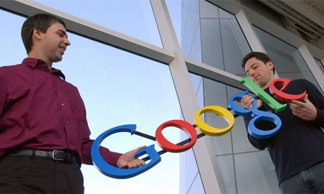

| Nomi |
date |
Fondatori |
cosa e' |
Foto |
| Yahoo |
1994 |
David Filo e Jerry Yang |
Yahoo! e una societa fornitrice di servizi internet rivolta al mondo business e consumer |
|
| Excite |
1994 |
Viene fondato da un gruppo di studenti della Stanford University. |
I portali Excite presenti nel mondo sono tutti caratterizzati da una offerta ampia di servizi. Tra questi rimane strategica l'offerta di una casella di posta elettronica a cui pero si sono aggiunti molti altri prodotti, dai blog al meteo. |

|
| Google |
1997 |
Larry Page e Sergey Brin, |
Si occupa catalogare e indicizzare le risorse del World Wide Web si occupa anche di foto, newsgroup, notizie, mappe, mail, shopping, traduzioni, video e programmi creati appositamente da Google. |

|
| Overture.com |
1998 |
Da amici di universita |
Si occupa di fare ricerche in internet |

|
| Il venture capital e l'apporto di capitale di rischio da parte di un investitore per finanziare l'avvio o la crescita di un'attivita in settori ad elevato potenziale di sviluppo. Spesso lo stesso nome e dato ai fondi creati appositamente, mentre i soggetti che effettuano queste operazioni sono detti venture capitalist. |